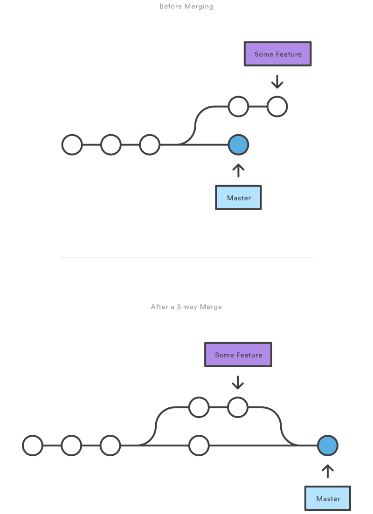

Git-ing started with Git
About me
Web Hoster
Software Developer
Video Game Enthusiast
excaliburjs.com
What is git? How is it different?
| Git | CVS/SVN/TFS/Perforce |
|---|---|
| Distributed | Centralized |
| Free/Open Source | Proprietary* |
| Low disk/memory footprint | meh |
| Cheap branching | Expensive copies |
| Easy context switching | Good luck |
| Works offline | Needs connection |
Where do I "git" it?
There are multiple git clients out there for your platform. Use what makes you happy
- Command Line - https://git-scm.com/download/
- Github for Windows - https://desktop.github.com/
- Visual Studio
Chocolately ROCKS
https://chocolatey.org/
choco install gitchoco install poshgitA brief history of Git
Developed originally by Linus Torvalds of Linux fame, when the proprietary DCVS tool 'BitKeeper' that the Linux community was using, became no longer free of charge.
Used to maintain the Linux kernel itself, it needed to be robust enough to handle large projects
Linus Torvalds on GitHow do I git stuff?
Find existing code
$ git clone https://github.com/excaliburjs/Excalibur.git$ git clone git@github.com:excaliburjs/Excalibur.gitOr initialize a new repo
$ git init
$ git remote add origin https://github.com/eonarheim/example-githup-repo.git
$ git push -u origin masterStarting off with git
First, a commit is 3 things
- A set of files and directories that is a snapshot of the filesystem of the project at some point in time
- A reference to the parent commit aka "base commit"
- All of the above in a commit is SHA1 hashed before it is stored, so any change is detected by git
A project is a chain of commits pointing back in time, and always starts with a "root" commit with no parents
Git is all about manipulating this series of commits!

Second, adding things and committing
Different than your centralized version control, all local.

Demo!
A repository has heads (aka branches)
"heads" are a type of ref (references) are just named commits some of which are called "branches"
HEAD is a special pointer that points to the head of the current branch
Index is a special pointer that points to the staging area
So why are branches cheap in git?
Branching
$ git checkout -b new-branch$ git branch new-branch
$ git checkout new-branchCheck status
$ git status
On branch master
Your branch is up-to-date with 'origin/master'.
nothing to commit, working directory cleanA Brief Word on commit messages...
- Use present tense verbs ("Fix bug where..." instead of "Fixed bug where...")
- Use imperative mood ("Add new feature" instead of "Adds new feature")
- Capitalize the first letter of the first line
- Limit the first line to 50 characters or less
- Separate the message subject from the rest of the commit with a blank line
- Limit lines in the message body to 72 characters or less
- Reference issue and pull request numbers as appropriate
- If your change is small and simple, you may only need to write a single line commit message, e.x. "Fix typo in documentation"
View history
git log --oneline056b1cf Fix link to samples
a5239ec Update assets with new designs
3e1ecd6 Update logo asset
d56cc8f [Close #511] Fix setting initial opacity to 0 and subsequent opacity updates fail (#613)
67e1a0e [Close #555, #320] Fix camera lerp and support easing functions (#610)
74b840f Update assets
cb2ac4c [Close #609] Fix updating player acceleration (#611)
7fe5ebc Update CONTRIBUTING.md and add Code of Conduct (#608)
53bf4e1 Update link to edge docs
d4ffe30 Fix compiling Polygon
02b1f1e Upgrade to TS 1.8 (#605)
3039eb9 Update travis-ci
94d0e29 Try using different UA
6bb16dc Close [#585] Implement actor.on('kill') event (#597)Ignoring files
The .gitignore file at the root fo the project directory contains patterns to igonre


Pushing changes
Interacting with the network
Pull vs Fetch
Fetch grabs changes in remote branch and brings them local (w/o merging)
Pull = fetch + merge changes into current branch
Merging
$ git merge [branch-to-merge]Fast forward merge

3-way merge (results in a merge commit)
Conflict
<<<<<<< HEAD
foo
=======
bar
>>>>>>> cb1abc6bd98cfc84317f8aa95a7662815417802dFind your merge tool config
git config --list --show-originSet your merge tool
[diff]
tool = vsdiffmerge
[difftool]
prompt = true
[difftool "vsdiffmerge"]
cmd = \"C:\\Program Files (x86)\\Microsoft Visual Studio 14.0\\Common7\\IDE\\vsdiffmerge.exe\" \"$LOCAL\" \"$REMOTE\" //t
keepbackup = false
trustexistcode = true
[merge]
tool = vsdiffmerge
[mergetool]
prompt = true
[mergetool "vsdiffmerge"]
cmd = \"C:\\Program Files (x86)\\Microsoft Visual Studio 14.0\\Common7\\IDE\\vsdiffmerge.exe\" \"$REMOTE\" \"$LOCAL\" \"$BASE\" \"$MERGED\" //m
keepbackup = false
trustexistcode = true
Changing History
Rebasing
git rebase [new-base]Rebase the current branch onto the "new-base", which can be any ref
git checkout experiment
git rebase master
Interactive Rebasing
Mess with time and space
Some controversy... merge vs. rebase
- Record or reality
- Story of the project
Undoing mistakes
Fix the last commit
git commit --amend*DONT AMEND YOUR COMMIT IF ALREADY PUSHED
Revert vs. Reset
Revert is a new commit that is like the "anti" commit for an older commit
Reset unwinds the commit from history, and can be dangerous
*Mostly used to undo stuff in the staging area or to back-out non-pushed commits

Stash
$ git stash
$ git stash pop
$ git stash listGit and open source best practices
Public history
Don't mess with history, or people will be sad
Branches that are shorter lived are better
Common Workflow
The "Github" flow, which you can use for profit
- Create an issue
- Discussion
- Fork
- Pull Request
- Discussion
- Merge
- Profit$
Pull Requests
ExampleResources
- Github Training https://www.youtube.com/watch?v=U8GBXvdmHT4
- Try Git https://try.github.io/levels/1/challenges/1
- Git Real https://www.codeschool.com/courses/git-real
- What is git https://www.atlassian.com/git/tutorials/what-is-version-control
- Understanding git https://www.sbf5.com/~cduan/technical/git/
- GitHub Fundamentals with Bill Wagner
- Github Cheat Sheet PDF
- Pro Git PDF
- RevealJS